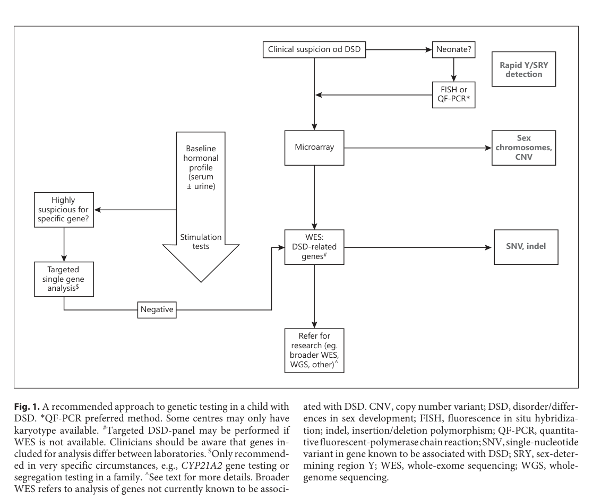

46,XY Complete Gonadal Dysgenesis (Swyer syndrome): Comprehensive Disease Characteristics Research Report
Executive summary
46,XY complete gonadal dysgenesis (CGD), commonly called Swyer syndrome, is a Mendelian (single‑gene/oligogenic) 46,XY difference/disorder of sex development (DSD) characterized by nonfunctional “streak” gonads, female external genitalia, and typically preserved Müllerian internal structures due to failure of fetal testicular hormone production. The most clinically consequential feature is a high risk of gonadal germ‑cell neoplasia in Y‑chromosome–containing dysgenetic gonads, motivating prophylactic gonadectomy plus puberty induction and lifelong hormone replacement therapy (HRT). Recent literature (2023–2024) emphasizes early genetic diagnosis using NGS and risk‑stratified long‑term care, while acknowledging persistent diagnostic yield limits in 46,XY DSD. (o’connell2023establishingamolecular pages 5-6, o’connell2023establishingamolecular pages 10-11, o’connell2023establishingamolecular pages 2-3, rudnicka2024ariskof pages 1-2)
Key recent sources (2023–2024 prioritized)
Table (click to expand)
| Topic area | Key findings/statistics | Evidence type | Publication (authors, journal) | Year-month | Identifier | URL |
|---|---|---|---|---|---|---|
| Definition / phenotype | Swyer syndrome = 46,XY complete gonadal dysgenesis with female phenotype; typical presentation is primary amenorrhea, delayed/absent puberty, hypergonadotropic hypogonadism, streak gonads, and usually a small/hypoplastic uterus; incidence reported as ~1:80,000 in a case report (sandilya2023swyersyndromea pages 1-2, sowinskaprzepiera2023latediagnosisof pages 1-2) | Case report / review | Sandilya & Jha, Journal of Rare Diseases | 2023-09 | DOI: 10.1007/s44162-023-00016-9 | https://doi.org/10.1007/s44162-023-00016-9 |
| Definition / phenotype / genetics | Phenotypic female with 46,XY karyotype, primary amenorrhea, lack of secondary sexual characteristics, infantile uterus, streak gonads; genetics summarized as SRY mutation in 10–20% while most have normal SRY; other implicated genes include DHH, NR5A1, DAX1 duplication, and gain-of-function MAP3K1 variants (jawed2023ararecase pages 2-4) | Case report / review | Jawed et al., Women’s Health | 2023-01 | DOI: 10.1177/17455057231213270 | https://doi.org/10.1177/17455057231213270 |
| Tumor risk / management | Tumor risk rises with age: ~5% by age 15 and 27.5% by age 30; gonadectomy recommended for every diagnosed patient; prophylactic bilateral gonadectomy/salpingectomy emphasized (oryani2024dysgerminomaina pages 5-5, oryani2024dysgerminomaina pages 5-7) | Case report + literature review | Oryani et al., Journal of Obstetrics, Gynecology and Cancer Research | 2024-08 | DOI: 10.30699/jogcr.9.5.591 | https://doi.org/10.30699/jogcr.9.5.591 |
| Tumor risk / management | Reported malignancy risk 37–45% overall; dysgenetic gonads carry ~30% risk of gonadoblastoma; gonadoblastoma may transform to malignant germ-cell tumor in 50–60% of cases; prophylactic gonadectomy and estrogen-based HRT recommended (adra2024seminomain46 pages 2-3) | Case report + literature review | Adra et al., Journal of Clinical Research in Pediatric Endocrinology | 2024-04 | DOI: 10.4274/jcrpe.galenos.2023.2023-12-11 | https://doi.org/10.4274/jcrpe.galenos.2023.2023-12-11 |
| Tumor risk / management | Gonadoblastoma occurs in about 20–30%; >40% of gonadoblastomas reported as bilateral; early prophylactic gonadectomy, HRT for pubertal induction/bone health, and fertility via donor oocytes/ART discussed (jawed2023ararecase pages 2-4) | Case report / review | Jawed et al., Women’s Health | 2023-01 | DOI: 10.1177/17455057231213270 | https://doi.org/10.1177/17455057231213270 |
| Familial tumor risk / genetics | In reviewed familial cases, 27/30 underwent gonadectomy and 18/27 (66.6%) had gonadal tumors; tumors reported only in patients >10 years; familial heterogeneity includes MAP3K1, DHH, SRY, NR5A1, DAX1-related findings (rudnicka2024ariskof pages 4-4) | Case report + literature review | Rudnicka et al., Journal of Clinical Medicine | 2024-01 | DOI: 10.3390/jcm13030785 | https://doi.org/10.3390/jcm13030785 |
| Diagnostics / tumor prevention | Early workup of primary amenorrhea and absent puberty should include imaging, karyotype/cytogenetics, hormone testing, and histology when needed; prophylactic gonadectomy can prevent dysgenetic-gonad tumors; DSD prevalence broadly cited as ~1:1000 births in review context (sowinskaprzepiera2023latediagnosisof pages 1-2, sowinskaprzepiera2023latediagnosisof pages 2-6) | Case report / review | Sowińska-Przepiera et al., International Journal of Environmental Research and Public Health | 2023-01 | DOI: 10.3390/ijerph20032139 | https://doi.org/10.3390/ijerph20032139 |
| Genetics / molecular diagnosis | Early genomic testing recommended; up to 2/3 of 46,XY DSD may remain without molecular diagnosis; gene evidence table includes NR5A1 (high evidence) among 46,XY gonadal dysgenesis genes; stepwise testing: chromosomal sex confirmation, rapid Y/SRY tests, microarray/CNV analysis, targeted panels, then WES (o’connell2023establishingamolecular pages 7-8, o’connell2023establishingamolecular pages 10-11, o’connell2023establishingamolecular pages 1-2, o’connell2023establishingamolecular pages 2-3, o’connell2023establishingamolecular pages 3-4) | Clinical review | O’Connell et al., Hormone Research in Paediatrics | 2023-11 | DOI: 10.1159/000520926 | https://doi.org/10.1159/000520926 |
| Diagnostics / yield | DSD gene panels reported diagnostic yields of 20–45%; WES useful for unsolved cases and novel/oligogenic causes but may miss noncoding/CNV changes; a UK cohort cited 52% of genetically confirmed 46,XY DSD had apparently normal hormone profiles, supporting genomic testing beyond endocrine screening (o’connell2023establishingamolecular pages 5-6, o’connell2023establishingamolecular pages 10-11) | Clinical review | O’Connell et al., Hormone Research in Paediatrics | 2023-11 | DOI: 10.1159/000520926 | https://doi.org/10.1159/000520926 |
| Genetics / worldwide diagnostic landscape | Approximately 50% of 46,XY DSD patients lack a molecular diagnosis; most commonly mutated gonadal-development genes are NR5A1 and MAP3K1; review states WES generally gives higher diagnostic yield than panel sequencing, although cohort performance varies by ascertainment and method (jiali2024worldwidecohortstudy pages 1-2) | Worldwide cohort review | Chen Jiali et al., Frontiers in Genetics | 2024-06 | DOI: 10.3389/fgene.2024.1387598 | https://doi.org/10.3389/fgene.2024.1387598 |
| Genetics / diagnostic yield statistics | Across cohorts, molecular diagnostic rates ranged 24.3%–64.3%; one summary reported 43% of 46,XY DSD receiving a possible genetic diagnosis; common genes include AR, SRD5A2, NR5A1, with MAP3K1 also recurrent in some cohorts (jiali2024worldwidecohortstudy pages 4-6, jiali2024worldwidecohortstudy pages 6-7, jiali2024worldwidecohortstudy pages 3-4) | Worldwide cohort review | Chen Jiali et al., Frontiers in Genetics | 2024-06 | DOI: 10.3389/fgene.2024.1387598 | https://doi.org/10.3389/fgene.2024.1387598 |
| Genetics / mechanism / counseling | NR5A1 variants show broad phenotypic range including complete gonadal dysgenesis; lack of clear genotype-phenotype correlation; possible oligogenic contribution; early genetic testing and fertility counseling/preservation are advised (luppino2024roleofnr5a1 pages 5-7, luppino2024roleofnr5a1 pages 1-2) | Gene-focused review | Luppino et al., Current Issues in Molecular Biology | 2024-05 | DOI: 10.3390/cimb46050274 | https://doi.org/10.3390/cimb46050274 |
| Diagnostic workflow figure | Figure 1 presents a practical stepwise diagnostic/genetic workflow for DSD: clinical suspicion → rapid Y/SRY detection (esp. neonates) → baseline hormones → microarray/CNV assessment → targeted testing or exome-based DSD analysis (o’connell2023establishingamolecular media 9ea011f5) | Figure / workflow from review | O’Connell et al., Hormone Research in Paediatrics | 2023-11 | DOI: 10.1159/000520926 | https://doi.org/10.1159/000520926 |
Table: This table summarizes key 2023-2024 sources for 46,XY complete gonadal dysgenesis/Swyer syndrome across phenotype, genetics, tumor risk, diagnostics, and management. It highlights the most actionable statistics and recent diagnostic-yield statements for rapid evidence review.
1. Disease information
1.1 Concise overview (what is the disease?)
Swyer syndrome is 46,XY complete (pure) gonadal dysgenesis, in which gonads are completely dysgenetic and nonfunctional despite a 46,XY karyotype, leading to absent testicular hormone secretion (AMH/testosterone) and a phenotypic female presentation that is typically detected at puberty as primary amenorrhea and delayed puberty. (rudnicka2024ariskof pages 1-2, sandilya2023swyersyndromea pages 1-2, sowinskaprzepiera2023latediagnosisof pages 1-2)
1.2 Common synonyms / alternative names
- Swyer syndrome; Gordon Swyer syndrome (rudnicka2024ariskof pages 1-2)
- 46,XY complete gonadal dysgenesis (CGD) (rudnicka2024ariskof pages 1-2, adra2024seminomain46 pages 2-3)
- 46,XY pure gonadal dysgenesis (sandilya2023swyersyndromea pages 1-2, sowinskaprzepiera2023latediagnosisof pages 1-2)
- 46,XY gonadal dysgenesis (GD) / 46,XY CGD (adra2024seminomain46 pages 2-3)
- “XY female” / “XY‑female” (usage in case‑based literature) (rudnicka2024ariskof pages 4-6)
1.3 Key identifiers (OMIM, Orphanet, ICD‑10/ICD‑11, MeSH, MONDO)
Not available in the retrieved full‑text evidence. The accessible papers did not report OMIM/Orphanet/ICD‑10/ICD‑11/MeSH/MONDO codes for Swyer syndrome. (rudnicka2024ariskof pages 1-2, sandilya2023swyersyndromea pages 1-2, sowinskaprzepiera2023latediagnosisof pages 1-2)
1.4 Evidence sources: patient-level vs aggregated resources
The retrieved evidence is primarily case reports and case‑based literature reviews (patient-level) for Swyer syndrome, complemented by DSD diagnostic/genomics reviews and global cohort summaries (aggregated) describing genetic testing approaches and diagnostic yields for 46,XY DSD broadly. (sowinskaprzepiera2023latediagnosisof pages 1-2, o’connell2023establishingamolecular pages 10-11, jiali2024worldwidecohortstudy pages 1-2)
2. Etiology
2.1 Disease causal factors
Primary cause: genetic disruption of the testis‑determination / gonadal differentiation pathway in a 46,XY individual, leading to failure of testicular differentiation and endocrine function. (adra2024seminomain46 pages 2-3, rudnicka2024ariskof pages 4-6)
Genes implicated (examples from recent reviews/case-based syntheses): * SRY (Y‑linked testis determining factor) (adra2024seminomain46 pages 2-3, rudnicka2024ariskof pages 4-6) * SOX9, FGF9 (testis pathway) (rudnicka2024ariskof pages 4-6) * NR5A1 (SF‑1) (early gonadal development; supports SOX9 and AMH/steroidogenic programs) (o’connell2023establishingamolecular pages 2-3) * MAP3K1, DHH, WT1, DMRT1, NR0B1 (DAX1) (duplication), GATA4 (jawed2023ararecase pages 2-4, rudnicka2024ariskof pages 4-6, idris2025genomictechnologiesand pages 1-2)
SRY mutation frequency: multiple sources note that SRY mutations account for a minority (e.g., ~10–20% or ~15% depending on series/review). (jawed2023ararecase pages 2-4, adra2024seminomain46 pages 3-5)
2.2 Risk factors
- Presence of Y‑chromosome material in dysgenetic gonads is a major risk factor for gonadal tumors (gonadoblastoma/germinoma spectrum). (rudnicka2024ariskof pages 1-2, sowinskaprzepiera2023latediagnosisof pages 1-2)
- Increasing age increases risk of neoplasia in Swyer syndrome (age‑stratified estimates reported in recent case‑based reviews). (oryani2024dysgerminomaina pages 5-5, jawed2023ararecase pages 1-2)
2.3 Protective factors
No protective genetic or environmental factors were identified in the retrieved full‑text evidence.
2.4 Gene–environment interactions
No gene–environment interaction evidence was identified in the retrieved full‑text evidence.
3. Phenotypes
3.1 Core clinical phenotype (typical)
Onset/trigger for recognition: usually adolescence with delayed puberty and primary amenorrhea. (sandilya2023swyersyndromea pages 1-2, rudnicka2024ariskof pages 1-2, sowinskaprzepiera2023latediagnosisof pages 2-6)
Anatomy: typically female external genitalia with Müllerian structures present (uterus/fallopian tubes/upper vagina) because AMH is not produced in fetal life; gonads are streak/dysgenetic. (rudnicka2024ariskof pages 1-2, rudnicka2024ariskof pages 4-6)
Hormone profile: classic hypergonadotropic hypogonadism (high FSH/LH with low estradiol; often very low AMH/inhibin B where measured). Example values across reports include: * FSH 76.25 UI/L, LH 16.08 UI/L, estradiol <10 pg/mL, testosterone <0.02 ng/mL, AMH <1 pmol/L, inhibin B ~10 pg/mL (adra2024seminomain46 pages 2-3) * FSH 56.7 mIU/mL, LH 19.8 mIU/mL, estradiol <5 pg/mL (sowinskaprzepiera2023latediagnosisof pages 2-6) * FSH 96.73 mIU/mL, LH 26.84 mIU/mL with very low estradiol (sandilya2023swyersyndromea pages 1-2)
Secondary sexual characteristics: minimal/absent spontaneous breast development; sparse or absent pubic/axillary hair can occur, though adrenal androgens may contribute. (sandilya2023swyersyndromea pages 1-2, sowinskaprzepiera2023latediagnosisof pages 2-6)
3.2 Phenotype characteristics
- Severity: usually severe gonadal failure (complete dysgenesis) with absent endogenous puberty (rudnicka2024ariskof pages 1-2, adra2024seminomain46 pages 2-3)
- Progression/course: congenital gonadal defect; clinical detection often delayed until adolescence; tumor risk increases with age (oryani2024dysgerminomaina pages 5-5, jawed2023ararecase pages 1-2)
- Frequency among affected: quantitative symptom frequencies were not provided in the retrieved texts; key manifestations are repeatedly described as typical. (rudnicka2024ariskof pages 1-2, sandilya2023swyersyndromea pages 1-2)
3.3 Quality‑of‑life impact
Quantitative QoL instruments (e.g., SF‑36/EQ‑5D) were not reported in the retrieved evidence. Case reports and DSD care reviews note the need for psychological support and counseling, and delayed diagnosis may contribute to psychosocial distress. (sowinskaprzepiera2023latediagnosisof pages 2-6, krygere2025infertilitymanagementin pages 1-3)
3.4 Suggested HPO terms (examples)
- Primary amenorrhea — HP:0000786
- Delayed puberty — HP:0000823
- Hypergonadotropic hypogonadism — HP:0000044
- Streak gonads / gonadal dysgenesis — HP:0000135 (gonadal dysgenesis)
- Female external genitalia with 46,XY karyotype (sex reversal/DSD) — HP:0000069 (ambiguous genitalia; if applicable) and broader DSD terms
- Hypoplastic uterus — HP:0001107
- Gonadoblastoma / germ cell tumor — HP:0002893 (neoplasm)
(Note: HPO codes are provided as commonly used terms; they were not enumerated in the retrieved texts.)
4. Genetic / molecular information
4.1 Causal genes (high‑confidence examples in retrieved sources)
- SRY (Y‑linked; classic testis‑determining gene) (adra2024seminomain46 pages 2-3, rudnicka2024ariskof pages 4-6)
- NR5A1 (SF‑1) (promotes SOX9/AMH/steroidogenic programs) (o’connell2023establishingamolecular pages 2-3)
- SOX9, DHH, MAP3K1, WT1, DMRT1, NR0B1/DAX1 (duplication) (jawed2023ararecase pages 2-4, idris2025genomictechnologiesand pages 1-2)
4.2 Pathogenic variant classes (general)
DSD gene tables and Swyer‑focused reviews cite multiple variant classes including SNVs, deletions/duplications (CNVs), and structural rearrangements across sex determination genes. (o’connell2023establishingamolecular pages 2-3, o’connell2023establishingamolecular pages 3-4)
4.3 Inheritance patterns and genetic architecture
Familial cases are described as uncommon but documented; inheritance can be autosomal dominant, autosomal recessive, or X‑linked depending on gene, and oligogenic contributions are recognized in DSD genetics. (rudnicka2024ariskof pages 4-6, luppino2024roleofnr5a1 pages 5-7)
4.4 Epigenetics / chromosomal abnormalities
No Swyer‑specific epigenetic signatures were identified in the retrieved evidence. Chromosomal testing is central (46,XY), and mosaicism is mentioned as a consideration in gonadal dysgenesis contexts. (sandilya2023swyersyndromea pages 1-2)
5. Environmental information
No environmental, lifestyle, or infectious causal factors were identified in the retrieved evidence; Swyer syndrome is treated as primarily genetic. (rudnicka2024ariskof pages 1-2, rudnicka2024ariskof pages 4-6)
6. Mechanism / pathophysiology
6.1 Causal chain (current understanding)
- Upstream genetic disruption of testis determination (commonly SRY pathway and/or downstream regulators such as SOX9/NR5A1, plus other genes such as MAP3K1/DHH/WT1) prevents normal Sertoli/Leydig lineage differentiation. (adra2024seminomain46 pages 2-3, rudnicka2024ariskof pages 4-6, o’connell2023establishingamolecular pages 2-3)
- Absent fetal AMH and testosterone:
- Lack of AMH → persistence of Müllerian ducts → uterus, fallopian tubes, upper vagina. (rudnicka2024ariskof pages 1-2, rudnicka2024ariskof pages 4-6)
- Lack of testosterone → absent Wolffian development and absent masculinization → female external phenotype. (rudnicka2024ariskof pages 4-6)
- Streak/dysgenetic gonads fail to produce sex steroids at puberty → hypergonadotropic hypogonadism (high FSH/LH, low estradiol) → delayed/absent puberty and primary amenorrhea. (rudnicka2024ariskof pages 1-2, adra2024seminomain46 pages 2-3)
- Tumor predisposition: dysgenetic gonads with Y‑chromosome material have high gonadal tumor risk; Y‑linked factors such as TSPY1 are implicated in gonadoblastoma pathogenesis, and gonadoblastoma can transform to malignant germ cell tumors. (rudnicka2024ariskof pages 1-2, adra2024seminomain46 pages 2-3)
6.2 Pathways and processes (ontology suggestions)
GO biological processes (suggested): * Sex determination (GO:0007530) * Gonad development (GO:0008406) * Sertoli cell differentiation (GO:0060009) * Anti‑Müllerian hormone signaling / Müllerian duct regression (process concept supported by AMH deficiency; term selection may vary) (rudnicka2024ariskof pages 4-6, adra2024seminomain46 pages 2-3)
Cell types (Cell Ontology suggestions): * Sertoli cell — CL:0000096 * Leydig cell — CL:0000179 * Primordial germ cell — CL:0000670
7. Anatomical structures affected
7.1 Organ level
- Gonads (dysgenetic/streak gonads) (rudnicka2024ariskof pages 1-2)
- Reproductive tract: uterus/fallopian tubes/upper vagina typically present (rudnicka2024ariskof pages 1-2, rudnicka2024ariskof pages 4-6)
7.2 Suggested UBERON terms (examples)
- Gonad — UBERON:0000990
- Ovary / testis (context-specific; dysgenetic gonads) — UBERON:0000992 / UBERON:0000473
- Uterus — UBERON:0000995
- Fallopian tube — UBERON:0003889
- Vagina — UBERON:0000996
8. Temporal development
8.1 Onset
Congenital developmental condition; typically diagnosed at puberty due to lack of spontaneous pubertal progression and primary amenorrhea. (sandilya2023swyersyndromea pages 1-2, rudnicka2024ariskof pages 1-2)
8.2 Progression / critical periods
- Puberty is a critical window for recognition and intervention (HRT, counseling). (sandilya2023swyersyndromea pages 1-2, adra2024seminomain46 pages 2-3)
- Tumor risk is described as highest at/after puberty and increasing with age in reviewed series. (adra2024seminomain46 pages 2-3, oryani2024dysgerminomaina pages 5-5)
9. Inheritance and population
9.1 Epidemiology
- Incidence estimates reported: ~1:80,000 (case report) and ~1:80,000–100,000 births (review). (sandilya2023swyersyndromea pages 1-2, rudnicka2024ariskof pages 1-2)
- For context, DSD overall reported as ~1:1000 births in a DSD review/case report. (sowinskaprzepiera2023latediagnosisof pages 1-2)
9.2 Inheritance
Heterogeneous inheritance depending on gene; familial cases exist and may show elevated tumor frequency in a literature review dataset. (rudnicka2024ariskof pages 4-6, rudnicka2024ariskof pages 1-2)
10. Diagnostics
10.1 Clinical evaluation (real-world implementation)
Common diagnostic elements include: * History/physical: primary amenorrhea, absent puberty, undervirilization; Tanner staging (sowinskaprzepiera2023latediagnosisof pages 2-6) * Hormonal profile: FSH/LH/estradiol ± testosterone; AMH and inhibin B can support absent Sertoli function (adra2024seminomain46 pages 2-3) * Imaging: pelvic ultrasound and/or MRI to evaluate uterus and locate gonads, which may be small or not visualized (sowinskaprzepiera2023latediagnosisof pages 2-6) * Cytogenetics/molecular: karyotype confirming 46,XY; SRY detection/testing (sowinskaprzepiera2023latediagnosisof pages 2-6) * Histopathology following gonadectomy/biopsy to assess malignancy (sowinskaprzepiera2023latediagnosisof pages 1-2)
10.2 Genetic testing approach (2023 workflow)
A 2023 DSD genetics review recommends early integration of genomic testing and describes a stepwise strategy including rapid Y/SRY testing (FISH/QF‑PCR), karyotype/microarray for CNVs, targeted panels, and WES when needed; DSD gene panels have reported diagnostic yields 20–45% and up to two‑thirds of 46,XY DSD may lack a molecular diagnosis in some cohorts. (o’connell2023establishingamolecular pages 10-11, o’connell2023establishingamolecular pages 2-3)
Figure evidence: A DSD diagnostic/genetic workflow is shown in O’Connell et al. (Figure 1). (o’connell2023establishingamolecular media 9ea011f5)
11. Outcome / prognosis
11.1 Major complication: gonadal malignancy
Quantitative malignancy risk estimates vary across reviews/series: * Overall malignancy risk reported 37–45% in a 2024 review/case report context; dysgenetic gonads carry ~30% risk of gonadoblastoma; malignant transformation potential 50–60%. (adra2024seminomain46 pages 2-3) * Age-related neoplasm risk estimates: ~5% by age 15 and 27.5% by age 30 in a 2024 literature review; other sources cite risk rising further by age 40. (oryani2024dysgerminomaina pages 5-5, jawed2023ararecase pages 1-2) * Familial case literature review: among gonadectomized familial cases, 18/27 (66.6%) had tumors; compared with 15–45% cited for sporadic cases in that review. (rudnicka2024ariskof pages 1-2)
11.2 Follow-up outcomes
A 2023 case report of bilateral dysgerminoma reports 5-year follow-up without changes suspected of invasion after gonadectomy. (sowinskaprzepiera2023latediagnosisof pages 1-2)
12. Treatment
12.1 Surgical
Prophylactic bilateral gonadectomy is consistently recommended once Swyer syndrome is diagnosed due to high tumor risk in dysgenetic Y‑containing gonads. (adra2024seminomain46 pages 2-3, sandilya2023swyersyndromea pages 1-2)
MAXO suggestion: gonadectomy — MAXO:0001024 (suggested term; not provided in retrieved text).
12.2 Hormone replacement therapy (HRT)
HRT is used to induce and maintain secondary sexual characteristics, uterine/endometrial maturation, bleeding cycles, and bone health. * One case report describes “estrogen first followed by cyclical estrogen and progesterone,” with menstruation by 6 months. (sandilya2023swyersyndromea pages 1-2) * A familial case series describes 17‑β estradiol titration up to 2 mg daily with addition of dydrogesterone 10 mg in sequential therapy after bleeding. (rudnicka2024ariskof pages 2-4)
MAXO suggestions: estrogen replacement therapy; progestin therapy (suggested; not provided as MAXO terms in retrieved text).
12.3 Bone health and supportive care
Estrogen replacement is described as important to prevent osteoporosis; calcium/vitamin D supplementation is used in case-based management. (jawed2023ararecase pages 2-4, yu2024pure46xy pages 1-2)
12.4 Fertility and real-world reproductive outcomes
Pregnancy is possible using assisted reproductive technologies (ART), particularly IVF with donor oocytes. A 2025 assisted reproduction case report describes successful IVF with donated oocytes leading to delivery of a healthy infant. (krygere2025infertilitymanagementin pages 1-3)
12.5 Psychosocial care
Psychological support/counseling is highlighted in case management (individual/group support; long-term psychotherapy in ART case). (sowinskaprzepiera2023latediagnosisof pages 2-6, krygere2025infertilitymanagementin pages 1-3)
13. Prevention
Primary prevention is not established (genetic developmental condition). Secondary/tertiary prevention focuses on: * Early detection (karyotype/genetic testing in primary amenorrhea/delayed puberty workup) (sowinskaprzepiera2023latediagnosisof pages 1-2) * Cancer prevention via early prophylactic gonadectomy (adra2024seminomain46 pages 2-3) * Genetic counseling for family planning (rudnicka2024ariskof pages 4-6)
14. Other species / natural disease
No comparative veterinary/natural disease evidence was identified in the retrieved corpus.
15. Model organisms
No Swyer‑specific model organism data were identified in the retrieved corpus.
Recent developments and expert analysis (2023–2024 emphasis)
- Earlier genetic diagnosis is increasingly recommended in DSD care pathways because hormonal/imaging phenotypes overlap substantially; diagnostic yields for DSD gene panels are commonly reported as 20–45%, and “up to two‑thirds” of 46,XY DSD may lack a molecular diagnosis in some settings, motivating broader sequencing and reanalysis strategies. (o’connell2023establishingamolecular pages 10-11, o’connell2023establishingamolecular pages 2-3)
- Global diagnostic yield remains limited: a 2024 worldwide cohort review states ~50% of 46,XY DSD patients cannot obtain a molecular diagnosis, while noting NR5A1 and MAP3K1 are among the most commonly mutated gonadal-development genes. (jiali2024worldwidecohortstudy pages 1-2)
- Risk‑stratified surgical decision-making is evolving in broader 46,XY DSD contexts (especially NR5A1-related forms), but for classic Swyer syndrome (streak, intra‑abdominal dysgenetic gonads with Y material), the prevailing recommendation in recent Swyer‑focused reports remains early gonadectomy. (adra2024seminomain46 pages 2-3, rudnicka2024ariskof pages 2-4)
Evidence gaps (from retrieved sources)
- Standardized identifiers (OMIM/Orphanet/ICD/MeSH/MONDO) were not present in accessible full text. (rudnicka2024ariskof pages 1-2, sandilya2023swyersyndromea pages 1-2)
- Limited systematic QoL outcome statistics specific to Swyer syndrome in 2023–2024 accessible corpus; evidence is largely qualitative. (sowinskaprzepiera2023latediagnosisof pages 2-6)
- Few disease-specific interventional trials; management is largely guideline/consensus and case-series driven.
URLs and publication dates (examples)
- O’Connell et al., Hormone Research in Paediatrics, Nov 2023, https://doi.org/10.1159/000520926 (o’connell2023establishingamolecular pages 10-11)
- Sowińska-Przepiera et al., Int J Environ Res Public Health, 24 Jan 2023, https://doi.org/10.3390/ijerph20032139 (sowinskaprzepiera2023latediagnosisof pages 1-2)
- Rudnicka et al., Journal of Clinical Medicine, Jan 2024, https://doi.org/10.3390/jcm13030785 (rudnicka2024ariskof pages 4-4)
- Adra et al., J Clin Res Pediatr Endocrinol, Apr 2024, https://doi.org/10.4274/jcrpe.galenos.2023.2023-12-11 (adra2024seminomain46 pages 2-3)
References
-
(o’connell2023establishingamolecular pages 5-6): Michele A. O’Connell, Gabby Atlas, Katie Ayers, and Andrew Sinclair. Establishing a molecular genetic diagnosis in children with differences of sex development: a clinical approach. Hormone Research in Paediatrics, 96:128-143, Nov 2023. URL: https://doi.org/10.1159/000520926, doi:10.1159/000520926. This article has 43 citations and is from a peer-reviewed journal.
-
(o’connell2023establishingamolecular pages 10-11): Michele A. O’Connell, Gabby Atlas, Katie Ayers, and Andrew Sinclair. Establishing a molecular genetic diagnosis in children with differences of sex development: a clinical approach. Hormone Research in Paediatrics, 96:128-143, Nov 2023. URL: https://doi.org/10.1159/000520926, doi:10.1159/000520926. This article has 43 citations and is from a peer-reviewed journal.
-
(o’connell2023establishingamolecular pages 2-3): Michele A. O’Connell, Gabby Atlas, Katie Ayers, and Andrew Sinclair. Establishing a molecular genetic diagnosis in children with differences of sex development: a clinical approach. Hormone Research in Paediatrics, 96:128-143, Nov 2023. URL: https://doi.org/10.1159/000520926, doi:10.1159/000520926. This article has 43 citations and is from a peer-reviewed journal.
-
(rudnicka2024ariskof pages 1-2): Ewa Rudnicka, Aleksandra Jaroń, Jagoda Kruszewska, Roman Smolarczyk, Krystian Jażdżewski, Paweł Derlatka, and Anna Małgorzata Kucharska. A risk of gonadoblastoma in familial swyer syndrome—a case report and literature review. Journal of Clinical Medicine, 13:785, Jan 2024. URL: https://doi.org/10.3390/jcm13030785, doi:10.3390/jcm13030785. This article has 9 citations.
-
(sandilya2023swyersyndromea pages 1-2): Ujjwala Sandilya and Sangam Jha. Swyer syndrome: a rare cause of primary amenorrhea. Journal of Rare Diseases, 2:1-3, Sep 2023. URL: https://doi.org/10.1007/s44162-023-00016-9, doi:10.1007/s44162-023-00016-9. This article has 1 citations.
-
(sowinskaprzepiera2023latediagnosisof pages 1-2): Elżbieta Sowińska-Przepiera, Mariola Krzyścin, Adam Przepiera, Agnieszka Brodowska, Ewelina Malanowska, Mateusz Kozłowski, and Aneta Cymbaluk-Płoska. Late diagnosis of swyer syndrome in a patient with bilateral germ cell tumor treated with a contraceptive due to primary amenorrhea. International Journal of Environmental Research and Public Health, 20:2139, Jan 2023. URL: https://doi.org/10.3390/ijerph20032139, doi:10.3390/ijerph20032139. This article has 4 citations.
-
(jawed2023ararecase pages 2-4): Inshal Jawed, Ayesha Azhar Javed, Syeda Alisha Johar, Daayl N Mirza, Ayesha A Abdani, and Asad Ali Khan. A rare case of swyer syndrome from pakistan in a young girl with primary amenorrhea and 46xy genotype. Women's Health, Jan 2023. URL: https://doi.org/10.1177/17455057231213270, doi:10.1177/17455057231213270. This article has 4 citations and is from a peer-reviewed journal.
-
(oryani2024dysgerminomaina pages 5-5): Mahsa Akbari Oryani, Mohaddeseh Shahraki, and Marjaneh Farazestanian. Dysgerminoma in a patient with 46, xy karyotype and pure gonadal dysgenesis (swyer syndrome): a case report and literature review. Journal of Obstetrics, Gynecology and Cancer Research, 9:591-598, Aug 2024. URL: https://doi.org/10.30699/jogcr.9.5.591, doi:10.30699/jogcr.9.5.591. This article has 2 citations.
-
(oryani2024dysgerminomaina pages 5-7): Mahsa Akbari Oryani, Mohaddeseh Shahraki, and Marjaneh Farazestanian. Dysgerminoma in a patient with 46, xy karyotype and pure gonadal dysgenesis (swyer syndrome): a case report and literature review. Journal of Obstetrics, Gynecology and Cancer Research, 9:591-598, Aug 2024. URL: https://doi.org/10.30699/jogcr.9.5.591, doi:10.30699/jogcr.9.5.591. This article has 2 citations.
-
(adra2024seminomain46 pages 2-3): Maamoun Adra, Hayato Nakanishi, Eleni Papachristodoulou, Evangelia Karaoli, Petroula Gerasimou, Antri Miltiadous, Katerina Nicolaou, Loizos Loizou, and Nicos Skordis. Seminoma in 46, xy gonadal dysgenesis: rare presentation and review of the literature. Journal of Clinical Research in Pediatric Endocrinology, 16:495-500, Apr 2024. URL: https://doi.org/10.4274/jcrpe.galenos.2023.2023-12-11, doi:10.4274/jcrpe.galenos.2023.2023-12-11. This article has 1 citations.
-
(rudnicka2024ariskof pages 4-4): Ewa Rudnicka, Aleksandra Jaroń, Jagoda Kruszewska, Roman Smolarczyk, Krystian Jażdżewski, Paweł Derlatka, and Anna Małgorzata Kucharska. A risk of gonadoblastoma in familial swyer syndrome—a case report and literature review. Journal of Clinical Medicine, 13:785, Jan 2024. URL: https://doi.org/10.3390/jcm13030785, doi:10.3390/jcm13030785. This article has 9 citations.
-
(sowinskaprzepiera2023latediagnosisof pages 2-6): Elżbieta Sowińska-Przepiera, Mariola Krzyścin, Adam Przepiera, Agnieszka Brodowska, Ewelina Malanowska, Mateusz Kozłowski, and Aneta Cymbaluk-Płoska. Late diagnosis of swyer syndrome in a patient with bilateral germ cell tumor treated with a contraceptive due to primary amenorrhea. International Journal of Environmental Research and Public Health, 20:2139, Jan 2023. URL: https://doi.org/10.3390/ijerph20032139, doi:10.3390/ijerph20032139. This article has 4 citations.
-
(o’connell2023establishingamolecular pages 7-8): Michele A. O’Connell, Gabby Atlas, Katie Ayers, and Andrew Sinclair. Establishing a molecular genetic diagnosis in children with differences of sex development: a clinical approach. Hormone Research in Paediatrics, 96:128-143, Nov 2023. URL: https://doi.org/10.1159/000520926, doi:10.1159/000520926. This article has 43 citations and is from a peer-reviewed journal.
-
(o’connell2023establishingamolecular pages 1-2): Michele A. O’Connell, Gabby Atlas, Katie Ayers, and Andrew Sinclair. Establishing a molecular genetic diagnosis in children with differences of sex development: a clinical approach. Hormone Research in Paediatrics, 96:128-143, Nov 2023. URL: https://doi.org/10.1159/000520926, doi:10.1159/000520926. This article has 43 citations and is from a peer-reviewed journal.
-
(o’connell2023establishingamolecular pages 3-4): Michele A. O’Connell, Gabby Atlas, Katie Ayers, and Andrew Sinclair. Establishing a molecular genetic diagnosis in children with differences of sex development: a clinical approach. Hormone Research in Paediatrics, 96:128-143, Nov 2023. URL: https://doi.org/10.1159/000520926, doi:10.1159/000520926. This article has 43 citations and is from a peer-reviewed journal.
-
(jiali2024worldwidecohortstudy pages 1-2): Chen Jiali, Peng Huifang, Jiang Yuqing, Zeng Xiantao, and Jiang Hongwei. Worldwide cohort study of 46, xy differences/disorders of sex development genetic diagnoses: geographic and ethnic differences in variants. Frontiers in Genetics, Jun 2024. URL: https://doi.org/10.3389/fgene.2024.1387598, doi:10.3389/fgene.2024.1387598. This article has 15 citations and is from a peer-reviewed journal.
-
(jiali2024worldwidecohortstudy pages 4-6): Chen Jiali, Peng Huifang, Jiang Yuqing, Zeng Xiantao, and Jiang Hongwei. Worldwide cohort study of 46, xy differences/disorders of sex development genetic diagnoses: geographic and ethnic differences in variants. Frontiers in Genetics, Jun 2024. URL: https://doi.org/10.3389/fgene.2024.1387598, doi:10.3389/fgene.2024.1387598. This article has 15 citations and is from a peer-reviewed journal.
-
(jiali2024worldwidecohortstudy pages 6-7): Chen Jiali, Peng Huifang, Jiang Yuqing, Zeng Xiantao, and Jiang Hongwei. Worldwide cohort study of 46, xy differences/disorders of sex development genetic diagnoses: geographic and ethnic differences in variants. Frontiers in Genetics, Jun 2024. URL: https://doi.org/10.3389/fgene.2024.1387598, doi:10.3389/fgene.2024.1387598. This article has 15 citations and is from a peer-reviewed journal.
-
(jiali2024worldwidecohortstudy pages 3-4): Chen Jiali, Peng Huifang, Jiang Yuqing, Zeng Xiantao, and Jiang Hongwei. Worldwide cohort study of 46, xy differences/disorders of sex development genetic diagnoses: geographic and ethnic differences in variants. Frontiers in Genetics, Jun 2024. URL: https://doi.org/10.3389/fgene.2024.1387598, doi:10.3389/fgene.2024.1387598. This article has 15 citations and is from a peer-reviewed journal.
-
(luppino2024roleofnr5a1 pages 5-7): Giovanni Luppino, Malgorzata Wasniewska, Roberto Coco, Giorgia Pepe, Letteria Anna Morabito, Alessandra Li Pomi, Domenico Corica, and Tommaso Aversa. Role of nr5a1 gene mutations in disorders of sex development: molecular and clinical features. Current Issues in Molecular Biology, 46:4519-4532, May 2024. URL: https://doi.org/10.3390/cimb46050274, doi:10.3390/cimb46050274. This article has 24 citations.
-
(luppino2024roleofnr5a1 pages 1-2): Giovanni Luppino, Malgorzata Wasniewska, Roberto Coco, Giorgia Pepe, Letteria Anna Morabito, Alessandra Li Pomi, Domenico Corica, and Tommaso Aversa. Role of nr5a1 gene mutations in disorders of sex development: molecular and clinical features. Current Issues in Molecular Biology, 46:4519-4532, May 2024. URL: https://doi.org/10.3390/cimb46050274, doi:10.3390/cimb46050274. This article has 24 citations.
-
(o’connell2023establishingamolecular media 9ea011f5): Michele A. O’Connell, Gabby Atlas, Katie Ayers, and Andrew Sinclair. Establishing a molecular genetic diagnosis in children with differences of sex development: a clinical approach. Hormone Research in Paediatrics, 96:128-143, Nov 2023. URL: https://doi.org/10.1159/000520926, doi:10.1159/000520926. This article has 43 citations and is from a peer-reviewed journal.
-
(rudnicka2024ariskof pages 4-6): Ewa Rudnicka, Aleksandra Jaroń, Jagoda Kruszewska, Roman Smolarczyk, Krystian Jażdżewski, Paweł Derlatka, and Anna Małgorzata Kucharska. A risk of gonadoblastoma in familial swyer syndrome—a case report and literature review. Journal of Clinical Medicine, 13:785, Jan 2024. URL: https://doi.org/10.3390/jcm13030785, doi:10.3390/jcm13030785. This article has 9 citations.
-
(idris2025genomictechnologiesand pages 1-2): Firman Idris, Andrew H. Sinclair, and Katie L. Ayers. Genomic technologies and the diagnosis of 46, xy differences of sex development. Andrology, 13:1025-1043, Jul 2025. URL: https://doi.org/10.1111/andr.13708, doi:10.1111/andr.13708. This article has 6 citations and is from a peer-reviewed journal.
-
(adra2024seminomain46 pages 3-5): Maamoun Adra, Hayato Nakanishi, Eleni Papachristodoulou, Evangelia Karaoli, Petroula Gerasimou, Antri Miltiadous, Katerina Nicolaou, Loizos Loizou, and Nicos Skordis. Seminoma in 46, xy gonadal dysgenesis: rare presentation and review of the literature. Journal of Clinical Research in Pediatric Endocrinology, 16:495-500, Apr 2024. URL: https://doi.org/10.4274/jcrpe.galenos.2023.2023-12-11, doi:10.4274/jcrpe.galenos.2023.2023-12-11. This article has 1 citations.
-
(jawed2023ararecase pages 1-2): Inshal Jawed, Ayesha Azhar Javed, Syeda Alisha Johar, Daayl N Mirza, Ayesha A Abdani, and Asad Ali Khan. A rare case of swyer syndrome from pakistan in a young girl with primary amenorrhea and 46xy genotype. Women's Health, Jan 2023. URL: https://doi.org/10.1177/17455057231213270, doi:10.1177/17455057231213270. This article has 4 citations and is from a peer-reviewed journal.
-
(krygere2025infertilitymanagementin pages 1-3): Laura Krygere, Ruta Bartasiene, Agne Kozlovskaja–Gumbriene, and Egle Drejeriene. Infertility management in a patient with swyer syndrome: a case report. Journal of Assisted Reproduction and Genetics, 42:1689-1695, Mar 2025. URL: https://doi.org/10.1007/s10815-025-03442-4, doi:10.1007/s10815-025-03442-4. This article has 3 citations and is from a peer-reviewed journal.
-
(rudnicka2024ariskof pages 2-4): Ewa Rudnicka, Aleksandra Jaroń, Jagoda Kruszewska, Roman Smolarczyk, Krystian Jażdżewski, Paweł Derlatka, and Anna Małgorzata Kucharska. A risk of gonadoblastoma in familial swyer syndrome—a case report and literature review. Journal of Clinical Medicine, 13:785, Jan 2024. URL: https://doi.org/10.3390/jcm13030785, doi:10.3390/jcm13030785. This article has 9 citations.
-
(yu2024pure46xy pages 1-2): Tengge Yu and Li Liu. Pure 46, xy gonadal dysgenesis and 46, xy complete androgen insensitivity syndrome: a case report. Medicine, 103:e38297, Jun 2024. URL: https://doi.org/10.1097/md.0000000000038297, doi:10.1097/md.0000000000038297. This article has 5 citations and is from a peer-reviewed journal.
Artifacts
- Edison artifact artifact-00
